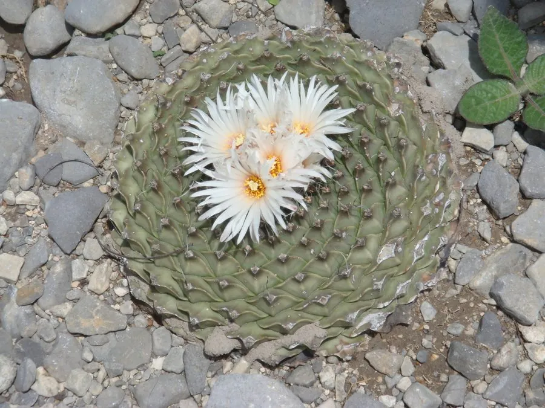

多肉植物 · 植物界
帝冠 Obregonia denegrii

仙人掌科帝冠属多年生肉质植物，疣突扁平、层叠如皇冠，花白色，是墨西哥特有的珍稀仙人掌，被列入 CITES 附录Ⅰ。
- 分类
- 门被子植物门纲木兰纲目石竹目科仙人掌科属帝冠属
- 栖息环境
- 原产墨西哥塔毛利帕斯州石灰岩坡地，喜光耐旱
- 地理分布
- 原产墨西哥塔毛利帕斯州，分布区狭窄
- 保护级别
- CITES 附录Ⅰ；IUCN 暂无评估；野外种群受采集威胁
物种志
帝冠为仙人掌科帝冠属多年生肉质植物，具粗壮肉质根，球体扁球形，高约五至十厘米，直径八至十二厘米。疣突扁平、三角形，螺旋状排列并层层叠压，形似一顶皇冠，灰绿色。刺座生于疣突顶端，刺短小、纸质。花生于球体顶部，花冠漏斗状，白色，花期夏季；浆果球形，成熟时白色，种子黑色。
帝冠原产墨西哥塔毛利帕斯州，生于石灰岩碎石坡地，是帝冠属唯一一种。它喜光、耐旱，夏季高温时需适度遮阴；适宜疏松透气、排水良好的石灰质颗粒基质，忌积水和闷热。疣突层叠如皇冠，形态奇特，是仙人掌爱好者追捧的珍稀种类；因野外种群受采集威胁，被列入 CITES 附录Ⅰ，栽培个体需通过合法途径获得。繁殖以播种为主。
形态与习性
- 株型扁球形，疣突层叠如冠
- 球径直径 8–12 cm，高 5–10 cm
- 花期夏季，花白色
- 光照喜光，夏季适度遮阴
- 水分耐旱，忌积水
- 土壤石灰质颗粒基质
- 主要用途珍稀仙人掌收藏与栽培
趣味知识
- 帝冠的疣突扁平、螺旋层叠，像一顶精致的皇冠，因此得名。
- 帝冠属只有帝冠一种，是墨西哥东北部的特有单种属。
- 它被列入 CITES 附录Ⅰ，国际贸易受到严格管制。